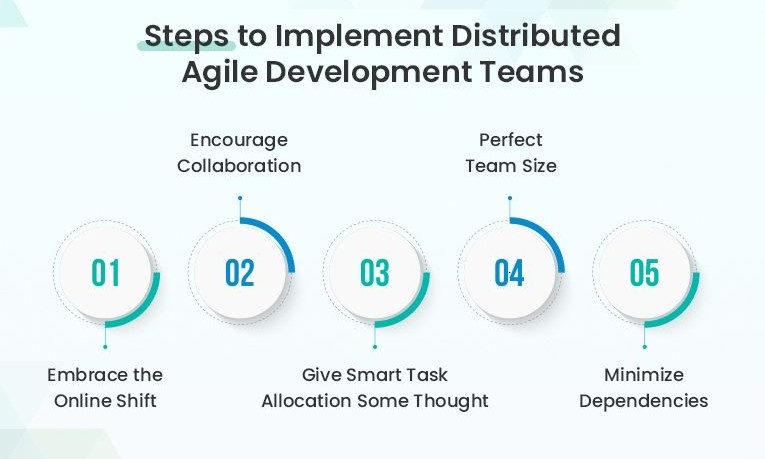
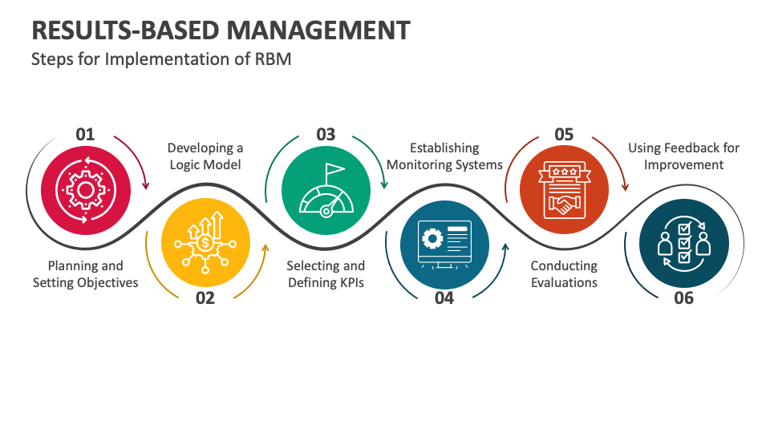

There's a quiet assumption in a lot of engineering organizations that still hasn't been challenged properly: remote work is something you accept if you can't make in-person work "real." That framing is backwards.
In practice, we've seen the opposite pattern hold - repeatedly and at different scales. When remote engineering is done with real operational discipline, it doesn't degrade engineering performance. It exposes whether an organization knows how to run engineering at all.
Remote doesn't break good systems. It exposes weak ones. And most of what gets labeled as "remote failure" is actually something else entirely.

Remote doesn't fail engineering. It reveals management maturity.
The most consistent pattern we've seen across distributed engineering teams is this: if a company struggles with remote engineering, the root cause is almost never "remote." It's that they were never managing through output in the first place. They were managing through presence.
In-office environments can hide that for a long time. You can infer productivity from activity. You can equate responsiveness with progress. You can use proximity as a proxy for trust. Remote removes all of that. What's left is uncomfortable:
- Work either ships or it doesn't
- Decisions are either clear or they aren't
- Blockers are either surfaced or they silently accumulate
There's nowhere for ambiguity to hide. And that's why remote feels harder for many organizations - not because it is harder, but because it's more honest.
Async-first systems don't slow decisions down - they improve them
There's a persistent myth that asynchronous communication slows engineering velocity. What actually slows engineering is rework caused by unclear thinking. Async systems force a different constraint: decisions must be written down before they are executed.
That constraint changes behavior. Teams that adopt real async practices - not just "we use Slack," but actual written decision-making - consistently produce:
- Clearer architecture decisions
- Fewer contradictory implementations
- Better institutional memory
- Significantly less "what did we agree on again?" drift
The key difference is that async doesn't optimize for speed of conversation. It optimizes for durability of understanding. And durable understanding scales in a way meetings never do.
The best engineers don't just tolerate remote - they are optimized for it
There's a version of this conversation that's still common in leadership circles: "Remote works for some people, but not for everyone." That's true, but incomplete. The more precise observation is that the traits making someone a high-leverage engineer in complex systems are the same traits that make them highly effective in remote environments:
- Deep focus over constant context switching
- Strong written communication
- Comfort with autonomy and ambiguity
- Low dependency on ambient validation
In co-located environments, these engineers often get interrupted the most - because they're seen as available. In remote environments, those same engineers get protected by structure. Not by accident - by design. That difference shows up directly in output quality.

Most RTO arguments are solving the wrong problem
A lot of return-to-office narratives are framed around collaboration, culture, or productivity. But when you look closely at the operational reality, a different pattern appears: the organization doesn't actually know how to measure output. So it defaults to measuring visibility instead.
- Proximity becomes a substitute for clarity
- Activity becomes a substitute for progress
- Attendance becomes a substitute for trust
That works - until it doesn't. And when it stops working, the response is often to increase presence requirements rather than fix the underlying system of management. Which is why many RTO mandates feel less like a strategic decision and more like a regression to what's easiest to observe.
Remote engineering only works when the system is designed for it
There's a version of remote engineering that is genuinely fragile - the version most companies accidentally build:
- Undocumented decisions
- Informal architecture knowledge
- Unclear ownership boundaries
- Inconsistent definitions of "done"
- Meetings used as the primary coordination mechanism
In that environment, distance amplifies dysfunction. But that's not a remote problem. That's a system design problem. The teams that succeed with distributed engineering share a different set of constraints: decisions are written, not remembered; architecture is explicit, not tribal; blockers are surfaced immediately in writing; and ownership is unambiguous across time zones.
In other words, remote doesn't remove coordination. It forces coordination to become visible.
The real divide in engineering organizations
At this point, the remote debate is often framed incorrectly. It's not really remote vs in-office. It's something deeper: presence-managed organizations versus output-managed organizations. Presence-managed organizations need proximity because it substitutes for measurement. Output-managed organizations don't.
Once you see that distinction clearly, a lot of patterns stop being mysterious - why some remote teams feel chaotic while others feel calm, why some in-office teams still fail despite being co-located, why senior engineers often prefer distributed environments, and why "collaboration" is often used as a catch-all justification for structural issues. The location is not the variable that matters most. The management model is.
Closing thought
If you zoom out, the implication is simple but uncomfortable for many organizations: remote engineering doesn't create performance differences. It amplifies them. Good engineering systems become more scalable, more documented, and more resilient. Weak engineering systems become more exposed, more fragmented, and more expensive.
If your engineering system depends on physical presence to function, you don't have a location problem. You have a system design problem. And location was never going to fix that.